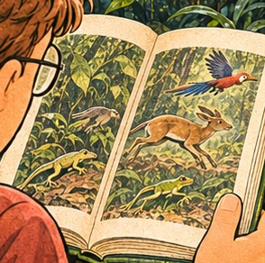
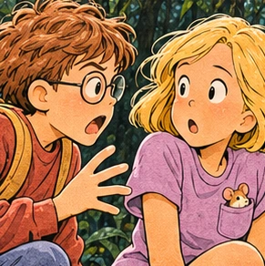
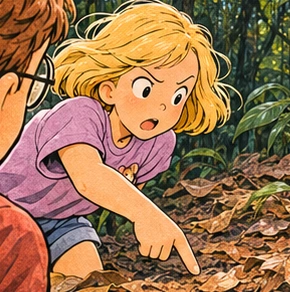
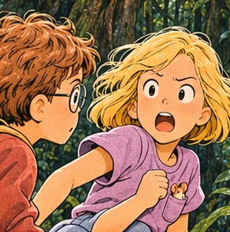
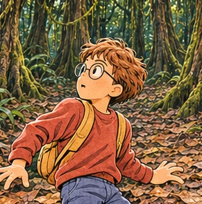
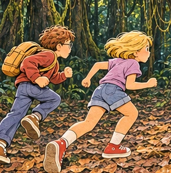

Chapter 4 · Part 2 — Millions of Them!
“Maybe the book explains it,” said Jack. He opened the book. He found a picture of different animals running together. He read:

When animals hear a crackling sound, they flee in panic. The sound means that 30 million flesh-eating army ants are marching through the dead leaves.
“It’s army ants!” cried Jack. “Millions of them!”

“Where?” cried Annie.

Jack and Annie looked around wildly.
“There!” Annie pointed.
Army ants—millions and millions of them—were marching over the leaves!
“Run to the tree house!” cried Annie.

“Where is it?” said Jack, whirling around. All the trees looked the same. Where was the rope ladder?

“Just run!” cried Annie.

Jack and Annie took off.
They ran over the dead leaves.
They ran between wide tree trunks.
They ran past the hanging vines and mosses.
They climbed over thick roots.
Jack saw a clearing ahead. It was filled with sunlight.
“That way!” he cried.
Jack and Annie hurried toward the light. They pushed their way through the bushes.
They burst onto the bank of a river.
They stared at the slow-moving brown water.
“Do you think the ants will come this way?” Annie said, panting.
“I don’t know,” said Jack. “But if we wade a few feet into the river, we’re safe. The ants won’t go into the water. Come on.”
“Look!” said Annie.
She pointed to a big log rocking at the edge of the river. The inside of the log was dug out.
“It looks like a canoe,” said Jack. He listened to the crackling sound in the distance. “Let’s get in it. Quick!”
Jack shoved the book into his backpack. Then he and Annie carefully climbed into the dugout log.
Annie leaned out of it. She pushed away from the bank with her hands.
“Wait!” said Jack. “We don’t have paddles!”
“Oops,” said Annie.
The canoe started moving slowly down the muddy river.